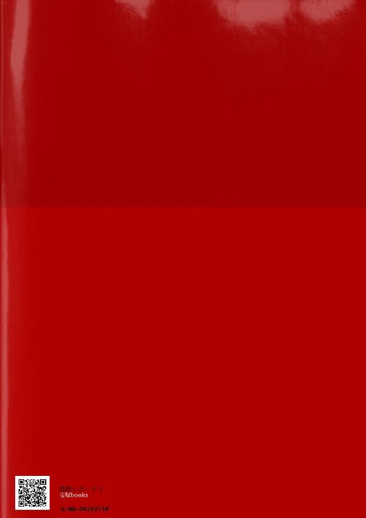

| 禁断レポート２巻 | |
| 新矢イチ | |
| 壱屋books (2017) | |
2016年4月6日更新
４/６文章表示デザインを変更致しました。
..............................
2016年４月６日更新
文書のデザインを変更
2016年3月25日更新
タイトル表示をL→Sに変更
..............................
(BL小説/近親相姦/愛ある復讐/電子限定小説付き)
本編約４９ページ、限定小説約４７ページ（文庫本換算）
＊こちらは禁断レポート２の続きです。
（内容紹介）
「さあ、遊ぼうぜ、兄貴」
双子の実の弟、哉太と絶縁して７年の月日が流れた。孝弘は現在、大手製薬会社へ就職していた。哉太は依然ニューヨークへ行ったきり、音沙汰音はない。孝弘は会社のプロジェクトで海外へ同行することに。行先は哉太の留学先のニューヨーク。一方、日本で帰りを待つ柚木は――。
＊本編中に、過激、無理やりの性描写表現を含みます。苦手方はご注意下さい。
（電子版限定小説）
「焦れったい夏」
（哉太×孝弘/高校生・家族旅行編）
（内容紹介）
高校３年夏、家族で江ノ島を訪れた孝弘と哉太。両親が居ようが海だろうが、哉太のアプローチは変わらず強引。しかし真面目な孝弘はそのアプローチから逃げてしまい――？
「さあ、遊ぼうぜ兄貴」
哉太と絶縁して、７年の月日が流れた。孝弘は出張先のNYで、哉太を行方を捜そうとするが...。一方、日本で帰りを待つ柚木の身に、重大な危険が及んでいて。天才科学者（弟）×ネガティブ美人（兄）、禁断の三角関係ラブ。
【媚薬】
狭義には催淫剤と呼ばれ勃起不全の治療に使われる薬を言い、広義(こうぎ)には性欲を高める薬、恋愛感情を起こさせるような薬を言う。惚れ薬とも称される。
しかし効果はあくまで相手の性的な興奮を煽るのみ。相手の恋愛感情を自在に操るまでは不可能とされている。
だれもが一度は考えたことがあるはずだ。「この世に本当に惚れ薬が存在するとしたら、どんな相手でも絶対に落とすことができるんじゃないか」と。
そのもしもが現実になったとき、人々は何を望むだろうか。
高嶺の花の美女たちを思い通りに操ってみたい。
元彼をひれ伏せたい。
毎日べつの女を抱きたい。
親友の恋人を奪いたい。
――『彼』の願いは、常に一貫していた。
双子の兄、その人だけを愛していた。兄に愛されたいと常に願っていた。
あるとき彼のねがいは思いもよらずかなってしまう。
ささいなきっかけで、血を分けた実の兄と性的関係を持つようになった。
兄と愛し合う日々は、想像以上に幸福で甘美な味だった。反面、彼は自我と道徳心のはざまで追いつめられた。
常に世の中の全ての人間から後ろ指をさされている気がした。毎夜毎晩その罪を上塗りし、孤独感と罪悪感に精神は押しつぶされていった。しかし腕の中で喘ぐ兄のすがたは、全ての苦悩を忘れさせてくれた。気の遠くなる絶望の世界で、その瞬間だけは深く強い幸福に包まれた。
罪悪感は偏った恋愛観をつくりあげ、やがて異常な執着心へと変貌した。彼はますます兄との関係におぼれた。細胞が、魂が、肉体が訴える。俺はもう、この人なしでは生きていけないと。
受け入れてくれた兄が愛しくてたまらなく、ただ一心に慈しみ愛し続けた。
――しかし。名残雪の吹きすさぶ三月のある日。
彼の恋はあっけなくも簡単に終わりを迎えた。
突然だった。
『もう全部、終わりにしたい』と兄は告げた。
他に大切な人がいると言われた。
本当は愛してなんかいない。からだを許したのは、恋敵の君が邪魔だったから。好きな人から君を寝取りたかっただけだと。
そう言われてようやく、兄にいいように利用されていた事を知った。
彼は兄の前から姿を消した。
――やがて月日は流れ、遠い異国の地で、彼は大人になった。
いまだ兄を許す気持ちはなかったが、あきらめもできずにいた。
どこに居ようと変わらず、一途に兄だけを思っていた。しかし、それが二度とかなわぬことは分かっていた。
人間の業を知り。裏切りを知り。
彼はもっと孤独になった。無情な現実に、次第に精神も追い詰められた。
そのうち兄を憎み恨むようになった。
好きにならなければよかった。何度も後悔した。
だがどうしても嫌いになれなかった。好きだった。どうしようもなく好きだった。
ついに彼の心は狂ってしまった。
いつしか人生の目的さえ変わり。
報復のため、日々を持て余すようになった。
もう一度兄の心を手に入れたい。その方法を模索する為だけに生きる日々が続いた。
何年も何年も何年も何年も......。
やがて執念は、思いがけない形で実を結ぶ。
――それは兄に裏切られて実に七年後、二○一六年二月某日のこと。
彼の起こした奇跡と同月同日のこの日は、奇しくも世界中の科学者が禁断としてきた『惚れ薬』が世に出るバースデーとなった。
惚れ薬の名は『reverse』。
脳の視床下部のうち、快楽中枢のみをマヒさせることで、人間の感情記憶を自在に操作させる、世界に唯一の惚れ薬だ。あくまでうわさだが、新薬開発までの臨床実験で幾多のホームレスが犠牲になったとささやかれている。
新薬の開発にひたすら人生をつぎ込んだ彼は、気付けば一○○年に一人の天才ドクターと呼ばれるようになっていた。
男の名は木瀬哉太。単身アメリカへ留学後は、母方の旧姓『小野』の名を語ってきた。もしや、この先兄に行方を探されたときを想定した小さな抵抗だった。
ともあれ。七年におよぶ策謀に、ようやく終止符が打たれようとしている。
時がきたのだ。
裏切りと絶望をもたらした双子の兄、孝弘に報復するその時が。
あの人を再び手にいれる――......否。
足元へひざまずかせ、自らの過ちを心から後悔させてやる好機が訪れたのだ。
ゆっくりじっくり気付かない所から追いつめ、逃げ場を失ったその瞬間――あの人の自我も精神も自尊心も。あの美しい身から溢れるもの全てを捕えてやる。
自覚すればいい。この先もう二度と、アンタは俺という存在から逃げられないことを。
＊
廃虚と化した、深夜のうす暗い研究室内。一人で鼻歌を歌いながら、哉太はデスクに散乱するガラクタの中から一枚の名刺を取り出した。
『大嫁製薬株式会社 第一営業部 営業一課 木瀬孝弘』
吐息で名前を復唱しながら、名刺の下の顔写真を指でなぞる。自然と顔がほころびシャドウブラックの眼がわずかに揺れる。
受付は『日本人はしつこい』と怒っていたが、そのうちの一人であろう彼の名前は、ブロードウェイミュージカルのプレミアムチケットなんかより、よほど魅力的だと思う。
色褪せぬ兄の記憶はこの日、美麗な一人の青年の顔に上書きされた。
――小悪魔が。ますます美人になってら。
また鼻歌を歌い、夜明け前のオフィスをゆったり歩く。支配するものは、兄への執着だけだった。ブラインドを指でこじ開けると、月明かりに野心を灯した二つの眼がそこに映る。
（さあ。遊ぼうぜ、兄貴）
口元に笑みをほころばせ。やがて彼の姿は夜の闇とともに消えた。
＊
二○一六年、四月某日。
その日も目覚めは最悪だった。ひどい寝汗で部屋着は背中までベッタリと貼りつき、シーツは手の中でぐしゃぐしゃにシワを作っている。
闇を必死に追いかけていた後ろ姿はもういない。
またあの夢かと、孝弘は起きがけに複雑なため息をついた。
「――哉太」
夢の続きみたく、ぽつりと名前を呼ぶ。当然返事はない。七年前から変わらぬ空虚が孝弘の胸に隙間風を吹かせる。
サイドボードに置いたジパンシイの腕時計を取った。
時刻は午後八時四十五分。時差を調整していないせいで日本時間表示のまま。ここ、ニューヨーク市は現在朝の五時をまわった頃だろうか。
（三時間も眠ってない）
ニューヨークに着いてから毎晩のように同じ夢を見るせいだ。
双子の弟であり事実上恋人だった、哉太の夢。
孝弘はしいて自覚はなかったが、哉太はそう思っていた。
当時は、哉太の『好きだ』という言葉を軽く考えすぎていた。肉体関係は、引き止めるための単なる方法に過ぎなかった。断れなかった。嫌われるのが怖かった。
いつか必ず終息が訪れるはずだ。こんな関係、長く続くはずがない。
安易な考えで優しさに甘え、幾数回と身をゆだねてしまった。考えもしなかった。哉太はこれを永遠の愛と捉えていたことなど。
『――信じらんねえ。最低だわ。本当......悪魔だよ、アンタ』
哉太がニューヨークへ留学し七年。その後の消息はいまだに不明。両親にさえ居場所をつげず、彼はどこで何をしているのだろう。
「......」
起床まであと一時間半。もう一度目を閉じれば、また彼が夢に姿を現わすだろうか。自分を指さし、昔と変わらぬあの声で裏切り者とののしりながら。
考えるだけで居たたまれず、枕をつかむと顔に押し付けた。
夢で感じた口付けの名残りが、七年前と変わらず首元をジリジリと優しく焦がしていた。
午前六時。意を決しベットを出る。
一週間の海外出張も今日が最終日だ。孝弘の顔にほっと安堵の表情が浮かぶ。
足元のビジネスバックから携帯を取り出す。指先はすぐアドレス帳から一人の名前を探しあてる。
―柚木―
仕事のめどがたつまで連絡しないと決めていた。声を聞けば過保護が暴走するだけだろうし、柚木より仕事を選んだ自分を責めてしまうだろうから。――もっとも、ここがニューヨークでなければもう少し寛容な決断ができた可能性もあるが――
『......ふあい』
日本式の呼び出し音がプルルと鳴って数秒。おっとりとした舌足らずな掠れ声が、七日ぶりに孝弘の鼓膜をくすぐった。
「おはよう柚木。もしかしてもう寝てましたか」
クスクス笑いながら孝弘は思い人の名前を呼ぶ。『あ、え、孝弘？』『んあ、いま、何時......』受話器の向こうは何やら慌ただしい。しばらくせわしないノイズ音が流れる。それから。『うわっ』とつぜん大声がして、どすんっと激しく電波が揺れた。
「柚木？」
『あーごめん！ ベットから落ちた』
「大丈夫ですか」
腕時計の針は二十二時を過ぎたところ。少し遅いイブニングコールのつもりだったが。どうやら柚木は一歩先に睡魔に襲われていたようだ。慌てて飛び起きるさまを想像して笑ってしまった。『うん、へーき。おっかしいなあ。さっきまで起きてたんだけど。あ、元気にしてた？』
「はい。おかげさまで」
『いまから出勤？』
「そうですよ。よく分かりますね」
ふふんと柚木が笑った。
『出張、今日が最終日だっけ』
「ええ。最後の金曜です」
これでやっと日本に戻れます。
ドレッサーチェアに掛けておいたベストに袖を通し、片手で器用にボタンをとめる。手前の鏡台で、ダークグレーのスーツセットを颯爽と着こなした品のある青年が、無表情にこちらを眺めていた。
横になでつけた前髪が左目にふわりと掛かって顔全体は柔和な印象。伸ばしっぱなしの太めの眉は、歳をかさね自然と細くなった。黒目の大きくて高潔なまぶたの上では、男らしいというより母性的なイメージが強い。ほどよく上を向いた口角に、ぽってりと重たそうな朱色の下唇。肩幅が広いわりに顔は小さく、仕事先では伊達の黒縁眼鏡がなければ『奇麗』だとまで言われる有りさまだ。
屈強な男らしさに憧れる一方、理想からどんどんかけ離れる自らの容姿を見るのが嫌で、最近は鏡に映ることすら避けていた。
久々におのれの姿を目の当たりにし、あまりの軟弱さにため息が止まらない。
『そっか、おつかれ。それで、仕事はうまくいったの』
「......」
『孝弘？』
「――あ、はい」
孝弘は二度目のため息を嚥下(えんげ)する。
「それが、まったく。交渉すら無理でした」
そう、一週間もかけたというのに、仕事は全くだった。
『失敗したってこと？』
「まあ...、はい。もうなんていうか最悪です」
相手は話を聞くどころか初日から門前払いだ。おかげでこの一週間、通訳としての出番は一度もなく、たいそう時間を持て余してしまった。
『そっか。大変だったね』
「いや、自業自得ですよ。あんなことをすれば誰でも怒ります」
無理もない。相手にすれば、日本からやってきたとある大企業の集団が、昭和初期の地上げ屋よろしく押しかけてきたようなものだ。
それは誰だって激怒する。それ程の事をしでかしてしまったのだ。
不運なことに、孝弘はくわしい業務内容を一切知らされておらず。現地に赴(おもむ)くまで、彼らの目的さえ不明だった。
どこか様子がおかしいと気付いたのは、初日の朝を迎えた後だった。
『早速だが、小野という研究者を我が社(うち)に引き渡すよう伝えて欲しい。金ならいくらでも支払う。もし拒否するならば痛い目に遭うと忠告してくれてかまわない』
案内された応接室で、同行したスタッフは最初から喧嘩(けんか)腰(ごし)だった。
『なんなら買収してやってもいいんだぜ、あんたらも大好きなんだろ？これだよこれ、マネー。......おっと、気を悪くしないでくれよ』
そのうえ通訳していいのかと迷うほど、最低な発言を連発。親指と人差し指でお金のジェスチャーをつくって「マネー」と言っていた。彼らは発言の内容を全て目の前の相手に告げろともいった。
――こんな失態、我が社の恥だ。
『Get out!!』と罵声とともに締め出された先方のあの剣幕(けんまく)を思いだすだけで、いまでもひどい頭痛がぶり返す。
医療機器シェア八割を占める日本屈指の製薬会社が、よりによってなぜこうも無礼な手段を選ぶ必要があったのか。理由が不明なだけにショックも大きい。
相手先はドラッグストアを中心に薬を卸(おろ)す小さな製薬会社だ。一般ドラッグから医療用の器具、果ては男性用化粧品まで幅広く扱う『大嫁製薬株式会社』とはフィールドは違うが、いわゆる同業他社にあたることは確かだろう。
接点という接点はそれだけ。過去数年分の経営議事録も調べてみたが、やはり関連は一切ない。
明らかな情報はあとひとつ。同行した社員たちは、そこに在籍する一人の研究員、『ドクター・オノ』という人物が喉から手がでるほど欲しいと、異様な目つきでそう漏らしていた。――残念ながら情報はそれだけだ。
『孝弘、いつ戻る？』
「今夜の夕方の便ですから、明日の夜には自宅に戻っていると思います」
『明日...そっか。――でも、忙しい、よね』
柚木の声がだんだん小さくなる。
「しばらくは上からの報告業務に追われるでしょうね」
『――うん』
「何せ大失敗していますから」
『......だよね』
「いまは帰国した後を考えている時間が一番苦痛ですね」
『ふうん』
そっけなく短い返答が続く。相槌(あいづち)はこころもとなく、別の何かに気を取られているようだ。
――何かあったのか。
「柚木？」
「くぁぁ」
「......」
『ん、ごめん呼んだ？ なんか目が覚めなくってさ』
しばらく耳を澄ましてみる。テレビの音声だろう、ニュースを読み上げる女性の音声がうっすら流れてくる。他は静穏としており、特に異変は感じない。
(良かった。眠たかっただけか)
――どうやら変に深読みしすぎていたようだ。やはり過保護が過ぎていると孝弘は苦笑する。
「柚木」
『ん、何』
「来週の夜、会いにいってもいいですか」
『――え、いいのか』
「ええ」
『仕事、忙しいんじゃねえの？』
「大丈夫ですよ。僕も仕事に日課を奪われて、役不足を感じていた所です」
『本当？」
「落ち着いたら、また毎晩会いましょう」
『うん...。ごめん、ありがとう。本当は俺、孝弘が居なくて寂しかったんだ』
「おや。珍しく素直ですね」
『は。いつも素直だろ』
「そうですか」
『そうだよ』
孝弘はクスクス笑う。
「すみません、冗談がすぎましたね。柚木はいつでも素直でいい子ですよ」
『ふーん...』
「僕も会いたいです。本当は、すぐにでもあなたの元気そうな顔が見たい」
そう言ってしばらく、柚木の声がしずまった。やがてゴホンッと咳払いが一回。
『うん、でも、俺も......孝弘に会いたい。本当に、すげえ会いたいよ』
遠慮がちだが素直な返事だ。
深い意味はないと分かっていても、自然と顔がほころんだ。
柚木はいまだに虐待のトラウマから抜け出せていない。放っておけば平気で自傷もする。食事も摂らない。アルバイトも平気で休んでしまう。精神が不安定な日は突然「ねえ、愛してるよ」と擦り寄ってくる事もあった。精神科医の話では、症状はまだ序盤だという。これから何年も、彼は自らの心の闇と闘うことになる。いまはただ、自分に出来る役割を果たすだけ。毎日通っているのはその為だ。
早く会いたい。
寂しい思いをさせた分、うんと優しく甘やかしてやりたい。たくさん頭をなでてやりたい。抱きしめたい。
可能ならば夜通し側に付き添い、君を苦しめる悪夢から守りたい。
どれだけ尽くしても足りない。柚木のこととなると、いつも過剰に保護欲を煽られる。
「柚木」
『うん』
「ちゃんと食事はとっていますか」
『食ってるよ、大丈夫』
「夜は、怖くありませんか」
少し沈黙が流れた。
『大丈夫、怖くねえよ』
――そうか。よかった。
『あ、そうだ。聞きたいことあったんだけどさ』
「ええ」
『哉太には会えた？』
唐突な問いに、口元から笑みが消えた。
二人の過去を知る由もないのだから、柚木に悪気がないのは分かっている。昔を懐かしんでいるのか、口調は心なしか弾んでいた。
『アメリカに行っちゃって七年だっけ。ずっと連絡がないんだよな。えーとどこだっけ、アイツの留学先。マンハッタンの......』
「ミッドタウン地区」
何度リピートしたか分からない情報を、なかば棒読みで答える。
『あーそうだった。ミッドタウンのバークレーカレッジ』
801 Third Avenue, New York, NY, 10029, United States.
1-212-××××××
あれから何度電話しようと迷ったか。おかげでステイ先の住所はおろか電話番号は暗記済み。いまだに忘れられないのは、哉太の記憶が少しも色あせることなく残っている何よりの証拠だった。
哉太に会いたい。嫌われていてもいい。許されなくても......。せめてニューヨークで元気にしている姿を一目で良いから見たい。せめてもう一度、声を聞かせてほしい。
その根底には『恋しい』という感情があることを、孝弘はまだ自覚していない。
あの日の自分と真っ向から向き合うこともできぬまま、時だけがすぎてしまった。
柚木の言う通り。出張先がニューヨークと知り、もしかしたら再会できるかもと淡い期待を抱いていた事も確かだ。
けれど、
「残念ながら......会えませんでした」
『そうか』
「カレッジは随分まえに卒業していたみたいです。施設側も、その後の足取りまでは把握していないと」
実は出張当日の午後、仕事の時間の合間をぬってカレッジを訪れていた。再会どころか、哉太にむすびつく情報はゼロ。
弟とつながる唯一の生命線は、あまりにたやすく途切れてしまった。
『そ、か。残念だったね。はあ。哉太のやつどこへ行っちまったんだか』
「......そうですね」
こうなったのは全て自分の責任だ。余計な欲が出て、柚木を独占したくなった。何も知らない哉太をだまし、挙句の果てには兄弟の一線まで――。
『孝弘」
「はい」
『哉太が戻ってこないのって、もしかして俺のせい？』
「え？」
『俺が孝弘を独占しちゃってるから、哉太、嫉妬して出て行っちゃったんじゃないのかな』
本音をえぐる二度目の問いに、息が止まる。
「――いえ、違いますよ。むしろ僕の方が」
『え？』
「......っ」
駄目だ。
哉太との間に起きた過去を漏らしてしまえば、柚木とのつながりはきっと消えてしまうだろう。
僕はきっと嫌われる。汚い人間だと嫌悪される。
「......いえ。昔、卒業後の進路で言い争いしてたことを思いだしていました。哉太は水に流してくれているといいのですが」
鏡の向こうに、遠い目をした青年がいる。首にかけた紺色のネクタイを握りしめ、漆黒の瞳はじっとこちらを見つめている。やがて無表情は崩さぬまま、形のいい唇だけが静かに動いた。
声もなく『裏切り者』とただ一言。
＊
孝弘との通話が途切れると、柚木はふたたび絶望の淵に突き落とされた。
「やっと終わったか」
しわがれた男の声が柚木を呼んでいる。背後のベッドに裸で寝そべる初老の男だ。
「優しいねえ。いまの彼氏？」
歳は五十代半ば位。ニヤリと笑うと、やせぎすな輪郭からゴツゴツとした溶岩石みたいな頬骨が浮かんだ。
大量の整髪剤でなでつけたであろう黒髪は、浅黒い肌に負けず劣らず脂ぎって奇妙に光っている。正義人ぶったこの顔が、最近よく週刊誌の表紙をにぎわせている。
「『怖くない』ね。まるで当てつけのような言葉を使うんだな」
男がもういちど「柚木」と呼ぶ。真っ白な背中はひやみずに当てられたように震え始めた。
「いい加減こちらへ戻りなさい。話はさせてやったんだ。もう満足だろう」
今度は私が楽しませてもらう番だ。男はいうと壁掛けのモニターにリモコンを向ける。
映し出されたのは、ゲイポルノ。柚木によく似た青年が、男に集団で襲われている。この部屋と酷似した画面、服を剥がれ逃げ惑う裸の青年がいた。やがて一人の男に捕まり、頬をビンタされ、ベットに投げ飛ばされる。
モニターの正面で座り込む柚木は、顔を向けたきり微動だにしない。画面の被写体と同じく一糸まとわぬ姿で、ただ拳を作って画面を見ていた。
カメラは恐怖に顔をひきつらせた青年へズームする。直後、さまざまな角度からわっと何本もの腕が伸びだした。
男たちは青年の両腕を頭上で拘束し。片足を天井つりのロープで縛り。ぶざまに開脚された尻肉を、二人分の手でわり開く。カメラは青年の蜜 花だけを映すように、足元からいやらしく煽った。
「やめて」映像の音声にまぎれ、掠れた声が部屋に響く。やせぎすの男は柚木をみてほくそ笑み、そっと背後に忍び寄る。
映像の青年は大量の媚薬を尻から注射され、半狂乱になっていた。
男は「そんなにコイツが欲しいか」というと尻尾のついたアナル専用バイブをそこに押しこむ。首には赤い首輪がつけられ、「さあ、お散歩の時間だよ」付属のロープを男の一人が引く。
手足の拘束を解かれると命令のまま、青年は四つんばいになり犬のようになきながら部屋中を歩きだした。
バイブの振動で尻尾が揺れる。羞恥にゆがむ顔は次第に苦悶へ変わり。耐えきれず動きが止まると、「お仕置き」と称してバイブを激しく抜き挿しされた。青年はそれにすらヨダレを流し悦んでいた。
いつしか青年の周りには、下半身を露出した男たちが囲むように立っていた。奴らはバイブを引き抜き、代わりに陰茎の根本へコックリングをはめる。
『ところてんしたら罰ゲーム』
そう言うと今度は順番に彼の尻を犯し始めた。最初は小太りで毛むくじゃらの男だった。後ろから覆いかぶさると小ぶりの雄をあてがい、猿のように腰を振りその花弁を味わう。
頬がこけ、やせぎすの――この部屋の住人とよく似た風貌の――男が勃ちあがった自身を口内へねじ込んだ。残る三人は青年を見ながら扱く。男のたるんだ腹の肉がぱちんぱちんと尻肉を弾いた。男があっけなく達すると外野の一人がすぐさま飛びつき、また穴を犯す。
青年の楔は苦しそうに膨張し、コックリングにしいたげられながら、とうとう三人目で白濁を飛ばしてしまった。
男たちはお仕置きだと笑いあうと青年の太ももを後ろから担ぎ上げ、カメラに向かって開脚させる。
先の小太りの男がエスエム専用のムチを手に、白い液を飛ばした青年のその部分だけを、ひたすら打ちだした。
悲鳴とも嬌声ともつかない声が飛ぶ。青年は目を白黒させ、ムチのしなりにあわせて両脚を痙攣させていた――。
ビデオはまだ序盤だったが、脳裏にこびりついた記憶が、リアルな映像となってよみがえる。
柚木はただ目を見張り、うっすら張った涙の膜を飲み殺す。
「柚木。先週の君は大変に素晴らしかったよ」
うなじをなでられ、柚木はようやく背後にある男の気配に気がついた。
「もちろん、今夜も私を楽しませてくれるんだろうね」
男の挑発とも取れる行為に、ただじっとうつむいて唇をかむ。無反応が気に食わないのか、男は明らかにいらついていた。
「そうそう、義父さんからまた『ご支援』の依頼があったよ。君も大変だねえ。これで返済金の総額はいくらに膨らんだかな」
「――そ、んな......うそだ、あんたらが勝手にでっち上げてるだけだろ！」
「黙れ。いい加減ワシをてこずらせおって」
強引に腕を引かれ、柚木のからだは再びベットへ引きずり戻された。
「やっ――」
白い羽衣のように滑らかな両脚をつかむと割り開き、強引に入りこむ。
脳裏で孝弘の声がよみがえる。
『柚木、元気にしていますか』
『ちゃんとご飯は食べていますか』
『僕も、早く柚木に会いたい』
この世のなかでたった一人、柚木に生きる尊厳を与えてくれる、何より大切な男の声だ。
「嫌だ......、嫌だ――!!」
反射的に腕は男の体を退けようと暴れまわった。
降って来たのは容赦ない平手打ちだ。
「嫌だ？ ずいぶんと我がままな口を利くな。きみの、接客態度が、なってないと、お義父さんに伝えようか。ん？ どんな目に合うか、分かってるのか！」
また頬をぶたれる。言葉の合間に手を振りかざし、顔をあげる時間も与えられず、右に左に視界が跳ぶ。
熱い痛みが頬を切り裂くようにはしり、突然の衝撃と恐怖が柚木から抵抗を奪っていく。さらに義父の名前を出され、柚木は恐怖に震えた。
義父にどんな目で見られているか、痛いほど自覚している。
この顔が、容姿が、若くして亡くなった実の父親とあまりに似ていて憎いのだ。
優しくて格好良くて働き者で、近所でも自慢の父親だった。この世からいなくなっても尚消えぬ実の父の面影が許せないのだ、あの男は。その証拠に、目を合わすだけで『胸クソ悪い』と殴られてきた。
生きている限り、一生ゴミとしか扱われない。俺には痛みも、それでも生きている苦しみも、恐怖を訴える権利すら与えてもらえない。
一生。
そう......一生、誰にも見えない所で、俺はこうして痛められ続ける。
義父は待っているのだ。この世から消えたいと思い詰めるほど、柚木に屈辱と恐怖を与えられる機会を。
彼は常に、さらなる痛みと屈辱を与えるにはどうすればいいかと、そのために時間を割き、模索し続けている。そして『虐待』という名の暴力に『正当な理由』のつく日を待ちわびている。
逃げられるはずがない。解放されるすべなど、どこにもない。
過去に一度逃げて、嫌というほどこの身に叩き込まれた。そして悟ったのだ。義父の命ある限り、この世に自由はありえないのだと。
暴行の次はレイプ。その次は集団輪かん、そして売春。じゃあ、その次は......。考えるだけで全身の血液が凍りついた。
とうとう体から力が抜ける。両手をくったりと放り出し、言われるがまま股を開くと無言で男を迎えた。
「そうだ。分かればいいのだよ。ひどいことをしてすまなかったね」
偽善的な笑みを張りつけ、男は真っ赤に腫れた柚木の頬をなでた。
男はすぐに柚木の上に乗りあげ、首元にまたがる。グロテスクに光る半勃ちのそれが、目の前に突きだされた。
「ほうら、お舐め」
まだ芯の柔らかな肉の塊が、行為をせかすようはれた頬を打つ。生臭い。爬虫類が腐ったような、下衆な臭気がそこから漂う。思わず息をとめ、込みあげる吐き気をゴクリと飲み下した。
「う......っ」
こんなことで動じるな。本当の地獄はこれからだ。男が満足するまで、これを慰め続けなければ......。
「しゃぶりなさい。悪い子だった分、いつもより心をこめてな。ああそうだ、今日は久々に床に出そうかな。どういう意味か、分かるね」
「......っ」
喉がゴクリとなる。シワだらけの手に唇をなぞられ、泣きたくなった。
この男は、相手を屈辱におとしめるプレイを好むのだろう。柚木はよく犬のまねを演じさせられた。犬用のエサ入れに飯を入れられ、手を使わず食べさせられたこともあった。一日中鎖でつながれた日もあった。そして男が床に射精をする日は、全てを舐めとらされた。目の前で四つんばいになり、埃まじりのフローリングに鼻と舌をつけ、生臭いそれを犬のようにペロリペロリと拭うのだ。
「さあ早く」
肉の塊が半開きの唇へねじこまれた。どっと男の臭いが広がる。
「舌で扱きなさい」
むせ返りそうになる熱気のなか、柚木はぎゅっと目を瞑り、言われるまま唇を窄めた。
舌の上を、生臭い雄が前後する。唐突に奥まで押しこまれ――。
「ゲホッ」
「吸い上げろ」
いつもより反応の鈍い動作に苛立っているのか、抑揚がなく凍てついた声がさらなる行為をうながす。柚木の顔の上で、汚らしいアンダーヘアが顔に張り付いた。
「ん、ぶ」
根元まで咥えさせると腰を回転させ、太く育った肉棒でじっくりかき回す。柚木は嗚咽を耐えしのび、必死にそれをなめずった。
肉棒が口から出る直前、先端の突起に舌をあてがい、言われた通りにじゅるりと丹念にしゃぶり上げる。
「ふう」
そうだ。いい子だね。
腫れ上がった顔に再びアンダーヘアを押し付け、男がねっとり笑った。
「ふふ。自分の恋人が知らない男にこんなはしたない事を強要されていると知ったら、さっきの彼はどんな反応をするだろうね」
ズルリと抜きだしては奥まで貫き。しわがれたペニスが口を出入りする。感度が鈍くなっているのか、男はその先端を、ばちんばちんと食道の入り口に叩きつけた。苦しそうにえずく柚木の顔をうっとり見下し、なおも乱暴に腰をグラインドさせる。
「うっ、げほっ、んぶっおぶ、うぐっ」
「ああ、ああ、たまらないよ柚木。奇麗な顔をこんなにゆがめて。泣く程私の息子がうまいのか。ん？」
――苦しい。
「本当に......っ悪い子だね、君はっ、こんなに、私を欲しがって」
――息ができない。
舌を擦り、喉を突きあげ。何度も何度も楔は出入りを繰り返し、柚木の前の口を犯した。
早く、早く終われ。早く終われ......！
男が果てることだけを願って、懸命に舌の奉仕を続ける。鈴口を舐め、竿にむしゃぶりつき、瞳を潤ませ懸命に奉仕する。塩気をふくんだ生ぬるい体液が漏れだすと、じゅるりとそれを吸いあげた。
「はあ、ああ、ああ......気持ちいいよ。この舌遣い、最高だ！ 柚木、君ほど優秀なオモチャは初めてだ」
男はひたすら歓喜にむせぶ。
「そうだ、次は君の彼氏をここに呼んであげよう」
「ん、ぐっ」
瞬間。感情の死んでいた柚木の目が、激しい拒絶反応とともに見開かれる。男はにやりとほくそ笑んだ。
「ちゃあんと見てもらいなさい。私の息子を、君のかわいいお尻に咥えている所を。ふう......、君が本当は、どれほど淫猥な男なのか、教えてあげないと、ねえ。いい加減、隠し事も嫌だろう」
つぶらな瞳は左右に交錯し、男に懇願する。
駄目だ、孝弘にだけは知られたくない。
親友なんだ。
大切なひとなんだ。
高校時代から同じ悩みを共有してきた。
義父の差別や暴力も、孝弘が居たから耐えて来られた。孝弘が、あの家から出て行く勇気を俺にくれたんだ。
もしも、いまだに義父とのつながりを断ち切れず、それどころか売春まがいの行為を強いられていることを知られたら。
孝弘はきっと軽蔑する。汚い、よごれたからだだって、きっと俺の事を――。
「さあて、彼にはいくら積めばいいかなあ」
「ん、んん」
男は下半身にしがみつく青年をうっとりと眺め、この上なく楽しそうに口の端を上げる。
「そうだ、新しい道具も用意しておこう。君の飼育方法を、教え込んであげないと。線が良ければ私の代理をまかせよう」
「ぐ、う、んん――ッ」
嫌悪。憎悪。憎しみ。殺意。どれともつかないおぞましい感情が、全身から溢れ出す。
「きみがそんな反応をしてくれると思わなかったよ。早速来週にでも呼ばなければ」
ピストンが激しくなる。男は無理やり顎を持ち上げると、狂ったように腰を振り乱した。
「ふうっ、柚木、大好きなご主人さまがまた一人増えたねえ。大丈夫、柚木はかわいくしっぽを振ってさえいればそれでいいんだ」
――死ね......死ね、死ね、死ね変態野郎......!!
直後。男の放った大量のねばったい体液が、くぐもった視界をかすめた。
＊
「は、はあっふう、う、ひいっ」
あれから数十分。柚木は四つんばいでフローリングに頭を擦りつけ、あられもない声を出して泣いていた。
高くかかげられた尻の奥から、生理的な快感が次々と訪れる。優しさのかけらもない凶器のようなペニスが直腸をえぐり。内蔵をかき混ぜ。前立腺をこれでもかとこすり上げる。
背中に生ぬるい吐息がふきかかり、気持ちの悪さから全身が寒気立つ。反面、強引に奥をえぐられると、ダランと舌を垂らして喘ぎ狂う自分がいた。
本当に犬みたいだ。
フローリングにまき散らした他人の精子で顔をベトベトに汚し、後ろの穴に肉棒が出入りするたび腰をクネらせよがる。
「舐めろ」
命じるまま、床に鼻を擦りつける。快楽に溺れたからだはうまく機能してくれない。ダランと舌だけ伸ばして、床を拭おうとした。
「手伝ってあげようか」
男はピストンの合間に頭を持ち、床に押し付ける。
「う、ぐっ」
生臭い精子がねっとり鼻腔に絡みついた。込み上げる。嘔吐感。いますぐ吐き出したい衝動を抑え、それを舌ですくい喉を潤す。
「うまいか柚木」
先まで抜きだしたペニスがまた、奥まで挿入ってくる。焦げつくような痛みとともに、言葉にならぬ甘い愉悦が同時に押し寄せる。それが快感だとは思いたくなかった。脳裏はすでにとろけていたが、表情だけは男のプライドを張りつける。
「柚木、美味しいのか」
「お、いし、れ、す」
「もう一度言ってみろ」
「ひっ......、ご、しゅじんさまっのせい、し、おいしい、れす」
「もっと丁寧に言いなさい！」
「あ、あうっ、ご、ごしゅじんさまのお、ちんちんぽ、から、おいし、みるく、出てッ」
「言葉が足りんぞ。ええ」
「あ......、ああ......っ、あ、りがと、ございます......、ごしゅじんさまの、甘い、みるく......っおいし、れす」
躾られたとおり、感謝の言葉を述べながら床の上を何度も何度もなめずった。
ろれつが回らない。体の奥まで男に侵食され、かろうじて保ってきた自尊心までも壊れていく。
――構うものか。
律動が激しさを増す、柚木は吹き抜けのらせん階段をぼんやり見上げていた。
白一色で統一されたゆとりのある空間は、持ち主と違って清潔感に溢れている。壁一面の窓の外はネオンと月の光で輝き。欲で汚れた男の背中をじっと照らしていた。
室内を囲んだ純白のカウチ・ソファセット。ガラス細工のシャンデリア。奇抜な色彩の絵画はフロアランプに照らされ、部屋の至るところで煌々と飾られている。
そこにあるもの全てが、男の地位の高さの象徴そのものだった。二十以上も歳の離れた若い男を犯すことも、遊興に飽きた貴族の粋な趣味というやつか。
――いいさ。勝手に楽しんでろよ。
決めたんだ。今日で全部、何もかも終わりにしてやる。
床の精子を舐め、腹を穿つ屈辱に耐えしのび、柚木はじっとその時を待った。
――数分後。
男は二度目の果てへとのぼり詰めた。
「お、おおおっ――」
下半身をわななかせ、いっそう深く腰を鎮めながら、くふっと息を漏らす。どうどうと生温かい体液が直腸に流れ込んでくる。
「おおお......っ」
よほど気持ちがよかったのか、男はいまだ射精の余韻に浸っている。
――刹那。柚木は瞬時に身を翻した。下腹部を圧迫していたそれがポトリと抜け落ちる。男はポカンとした表情でそこにいた。だらしなくも精液をたれ流し、状況がのみ込めない様子で柚木を見ている。
次の瞬間。男は奇声を発しその場にのたうちまわっていた。
思い切り振り上げた柚木の右足が、容赦なく股間を蹴り上げたせいだ。
「死ねクソ野郎!! 死ねッ死ね死ね死ね死ね!!」
ガスッガスッガスッガスッ!!
必死に股間をかばおうとするが、次々と蹴りが入り、逃げることすらできない。途中、何度か足先がぐにゃりとした何かにぶつかった。勢い余って睾丸も蹴りつけたようだ。
耐えがたい痛みなのか、悲鳴はそのうちひしゃげた嗚咽に変わった。最後に顔面に数回蹴りを入れる。のたうち回った末、男はあっけなくその場に倒れこんだ。
「死ね、お前みたいなクズ死んじまえ!!」
そのまま半分白目を剥いた男を突き飛ばすと、気怠い身を引きずり、部屋の奥まで駆ける。
「ゆ、柚木ぃ、きさまぁぁぁ!!」
すぐさま血なまぐさい男の声が足元に絡みついた。
「きさま家畜の分際で!! 待ってろよ、殺してやる!! なぶり殺してやるからな!!」
この雌豚が!! 戻って来い!! クソ馬鹿が!! もはや人格すら破綻した汚い罵声だった。
「お前、どうなっても構わんのか!!」
一瞬義父の顔がチラついたが、そんなもの、もうどうでもいい。
「誰がテメエなんかに殺られるか」
大窓を全開にする。地上十八階。気まぐれな四月の風がどっと室内に吹き込んだ。殺伐とした寒さもおくせずベランダへ飛び出る。柵に手をかけよじのぼり。足の裏で鉄の感触を確かめながら、ゆっくり立ち上がった。
建物と建物をかいくぐったその下に、小さくなった夜の街が見えた。ネオンできらめく一帯は、米粒みたいな小さな光がエンジン音をとどろかせ、せわしなく行き交っている。まるでおもちゃで出来たちいさな世界だ。何時間か前まで自分も『点』の一部だったことが信じられない。しばらく無言で景色を眺めていた。そして背中ごしに男を見やると、不敵に笑う。
男の顔から血の気がうせていく。鼻血で顔中を真っ赤に染め、体はいまだに床をはいつくばったまま。ベランダで仁王立ちする全裸の青年を、瞬きもせず凝視している。彼が行わんとするこの先の出来事を想像し、目を見張っているのだ。
「お前......な、何を考えとるんだ。戻れ！」
「嫌だね」
柚木は赤く染まった頬を拭う。
「俺は一生戻らないよセンセイ」
そして前を向き直り、小さく深呼吸をする。夜風がしずかに鼻腔をくすぐった。ゆっくりゆっくり、全身の熱が冷めてゆく。
なんて奇麗な夜景なんだろう。
赤に黄色に青色に。星の数に負けじとまたくそれが、夜の闇にさらされた一人の孤独な青年を、やさしく照らしている。
柚木は最後にうっとりと目を細め、その景色を存分に眺めた。ネオンの光は、やっぱり小さな石ころみたいだ。
ああ、とても爽快な気分だ。
生きて来たなかで、一番おだやかな世界がそこにある。
つらい苦しい人生が、やっと終わるんだ。
「全部アンタらのせいだ」
柚木はぽつりと呟いた。人生最後となるだろう、この世の宝飾を、両目にいっぱい焼き付けながら。
ある日、父親が病気で亡くなった。数年後、柚木と母親は義父に拾われ、生活の援助をネタにさんざんおもちゃにされてきた。
天国の父への見せしめのように、柚木は幾多もの男に犯された。どこへ逃げようと、義父は柚木の後を追ってきた。何を言っても何をしても、許してくれなかった。そしてとうとう、売春まで強要されるようになった。
いろんな男に売られ、人間以下の扱いを受け。それでも耐えて。母が、少しでも楽になるならばと耐え続けて......。
気付いたときは、家も親友も自由も、何もかも義父に奪い取られていた。
全部全部全部全部全部......。
お前らのせいだ。
俺を産んだアンタのせいだ。
悪い男にだまされたアンタのせいだ。
憎しみにとりつかれたアンタのせいだ。
俺の体を、人としての尊厳を、人格を、さんざん軽んじてきたアンタのせいだ。
アンタらが全部悪いんだ。
大切な友達にまで手を出そうとした。
孝弘まで巻きこむ位なら、俺はこの手で自分の人生を終わらせてやる。
ねえ、センセイ。
性的暴行痕のある全裸の男が、ご立派な高級マンションから飛び降り自殺したってなれば、世間はどう思うんだろうね。
無関係をよそおうったって無駄だよ。だって俺の全身くまなく、アンタの遺伝子がこびりついてんだから。
いままで偽善者ヅラしてうまくやってきたんだろうけど、大議士先生もこれで終わりだね。
ゆっくりと両手を広げる。四月の夜風が全身に突きささった。
怖くはない。むしろこの一歩先の世界に、ずっと待ち望んだ自由がある気がした。
心残りは一つだけ。孝弘に会える来週までは生きていたかったな、なんて。
「柚木、やめろーーー!!」
男が叫んだその直後。柚木は天高く夜の街を飛び降りた。
哉太×孝弘、家族旅行編 二人が仲の良かった高校生時代の甘々ぶりを描いた読み切り短編です。
【あらすじ】
二人が秘密の関係になって最初の夏休み。両親の提案で、海水浴に出かけることになったのだが......。
＊
時刻は午前六時半。孝弘はこの日も、哉太の部屋のベッドで目覚めた。
「おはよう、哉太」
隣の無邪気な寝顔を確認し、そっとシーツをまくる。体を起こすといたたっと腰に手をあて、たたんでおいた黒の半袖シャツとジーンズに着替える。ボタンはきちんと上までとめる。孝弘には当たり前のルールだ。
「ふう」
じっとりにじむ額の汗をぬぐい、一足先に一階へ。
この日、木瀬家の食卓には、めずらしく両親がそろってトーストをかじる姿があった。リビングはマンダリンの芳香が充満している。
「おはようございますお母さん」
「おはよう。早いわねえ。夏休みなんだからゆっくりすればいいのに」
短パンにギンガムのシャツ一枚でイスの上にあぐらをかくこの女性を、一見して男子高校生二人の母親と見抜く者は皆無に等しい。
「夏休みですから。家事くらいしないとばちがあたります」
おかずでも作りましょうか、と両親へ。
「ありがとね。ホントそれ哉太に言って聞かせたい台詞(せりふ)だわ。ねえダーリン」
はあとため息をつくのは母親の環(たまき)、三十四歳。腰にちかいソバージュのロングヘアは頭上でお団子にまとめ、流行りの眉と唇を強調した派手なメイクを施している。こう見えて名の知れた進学塾で講師をつとめるキャリアウーマンだ。
「おいおい。孝弘が優秀すぎなだけでしょ。年頃の男の子なんて、みんなあんなものさ」
でもってこちらのやんちゃな風貌の男性は父親の浩(こう)介(すけ)、三十五歳。趣味はサーフィン。夏はアロハシャツとストローハットを欠かさない。こちらも不良がそのまま大人になった見かけだが、一級建築士としての腕は確か。現在は都内にオフィスを構え、環に負けず劣らず仕事に明け暮れる日々を送っている。
講義に出張にと、なにかと家をあけてばかりの二人がともに家にいるのは実に数カ月ぶり。一般の家庭では当たり前だが、木瀬家では大変珍しい光景で間違いない。
「けどさあ、双子なんだからちょっとは似てもいいんじゃない？ とくに性格とか」
「俺は哉太くらい不愛想でかわいげのない方が普通だと思うよ。あ、目玉焼きちょうだい」
「はい」
エプロンのヒモを通しつつ冷蔵庫を物色する。屈むとまた腰につーんと鈍痛が。う、とうなると哉太の顔が脳裏に浮かんだ。
「それさ、最近のアイツの態度を知ってて言ってる？ かわいげがないの度をすぎてるよ。哉太のやつ、何が何でもあたしを部屋に入れようとしないんだから」
思春期に突入したあたりから「勝手に部屋に入るな」と環を追い出していたが、どうやら最近は外出時までかぎをかける用意周到ぶり。環はそれが気に入らないと怒っている。せめて掃除くらいさせろっつーの！ とドンッとテーブルを叩いた。
「あははは。見せたくないのがいっぱいあるんだよ。俺もガキのころはしょっちゅう隠してたなあ、雑誌とかビデオとか」
「ダーリンは黙ってて！」
「はい」
ついうっかり過去の黒歴史を晒したあげく、ピシャリと叱られた。風船がしぼむように浩介からしゅるると笑顔が消える。
「あのゴミ屋敷、なんとかしないと。虫でも沸いてんじゃないかしら。あー汚い！」
「うっせーな。虫なんか沸いてねーわ」
とつぜん声がしたので、孝弘は驚いて頭をあげた。みれば哉太がリビングの入り口に。上下とも黒のスウェットに両手をつっこみ、かったるそうに寄りかかっている。
さらにリビングをみまわすと、
「なんだよ。両方いんのかよ」
両親をみるや迷惑そうに、寝起き特有のガラガラにしゃがれた声で毒づいた。とうぜん環の逆鱗(げきりん)に触れるわけで。
「はあ!? それが朝の一発目に言うセリフ？ おはようございます位言えねーのかよてめえは」
「......るせーな」
ぼりぼり頭を掻きながら角の席にどさりと座る。
「大体ね、アンタの部屋は汚すぎんのよ！ 服なんか出したら出しっぱなし」
(確かに)
添え物のレタスをちぎりつつ、そこは孝弘もひそかに同意する。
「あんな部屋でどうやって勉強してんのよ！ ていうか来年から留学先でどうすんのさ。あんな部屋じゃ皆に笑われるよ？」
「孝弘―、コーヒー淹れて」
「あ、はい」
「ちょっと人の話聞いてんの!?」
「っせえなあ」
「うるさいじゃないよ！ 部屋の掃除くらいしろっつってんだよ。てめえの為だろ」
「そういうのがうぜーんだよ。親だからって何でも首つっこんでくんな、マジうぜえ」
「はあ!?」
「まあまあ、ママも落ち着いて。これじゃせっかくの休暇が台なしだからさ」
元レディースの環は、現役で不良の哉太と相性がめっぽう悪い。顔を合わせば怒鳴り合ってばかり。父の浩介いわく、哉太のけんかっぱやい性格は環の若い頃と生き写しらしい。つまりは似たもの同士。行動も思考も丸被りだから、衝突ばかりしている。
「ふん。アンタなんかさっさと海外でもどこでも行っちゃえば」
「言われんでも出てくわこんな家」
「あんたねえ......」
「そこまで。けんかは終わり。はい、ママもちゃんと座り直して」
椅子に片方の膝を立てて座るまさに臨戦態勢の環を、隣で浩介がたしなめる。「哉太もちゃんと座れ」合わせ鏡のごとき、こちらも膝を立てて座る哉太をぴしゃりと叱る。
両者、不承不承ながらも座り直し。
「はい、目玉焼きとスクランブルエッグです。緑黄色野菜のサラダもあります。デザートにプレーンヨーグルトとバナナを和えました。哉太はコーヒーをどうぞ。角砂糖ふたつとミルクが多めで良かったですね」
タイミングを見計らったように、孝弘手製の料理をずらりと並べたところで。
「よっし。久々に家族全員そろった事だし、気をとりなおしていきますか」
じゃじゃ～ん。
足元から『夏の海をもっと楽しもう！ 湘南ビーチを網羅・旅行ハンドブック』と書かれた雑誌を取り出した浩介はにかっと白い歯をみせて笑った。
「突然だが今日より一泊二日の家族旅行に行くことに決めた。実はママと予定あわせて有給とったんだ。お前らの高校生活最後の記念だ、ぱーっと遊ぼうぜ！」
＊
唐突な『家族旅行宣言』から二時間。孝弘はフォレスターの後部座席で揺れ動く景色を眺めている。
『ルートヲ逸レテイマス、コノママ都道府県道四十六号線へ進ンデクダサイ......』
「あーっもうっ。このゴミゴミした小道は何!? わっけ分かんないんだけど」
「うーん。裏道を入ってまずったな」
無事に高速を下りたものの、どうやら目的地を目前にして迷った様子。ナビゲーションが延々とルート変更を呪文のように唱える一方、ここはどこだと頭をかきつつなおも右に左にハンドルを切る浩介に、助手席の環が地図を握りつぶし発狂する。
「ちょっと勝手に進むのやめなさいよ！ もういいあたし運転変わる！」
「ママちょっと黙っててよ。うーん、多分この角を曲がれば......」
左側の後部座席では哉太がシートに頭をもたげ、奇妙なほど穏やかな表情で目を閉じている。騒々しい車内で完全に休息モードだ。
「哉太」
「――ん」
暇だったので話しかけてみる。熟睡してなかったのか、すぐに右の目が開いてこちらをみた。
「このままだとホテルに到着するのはお昼をすぎそうですね」
うん、と軽いあいづち。なんだか元気がないと思ったら、
「腹減った」
朝食抜きがいまごろ祟り、ああだこうだと揉める両親を横目に、きゅるりと腹がなる。
「あ、アメ食べますか、少し持ってきました」
「いる。ちょうだい」
ん、と口をあける。ポーチからアメの袋を取り出し、破いた中身をポンと押し込む。すぐに口が閉じられ、指まで一緒に食まれてしまった。
「......」
しかもなかなか口から出してくれない。「あ、あの」「哉太」「哉太、指」「指が」ふっくらとした奇麗な唇と指を交互に見ていると、なんだか変な気持ちになる。ゴクっと自分の喉がなったので孝弘はいっそう慌てた。
「ん。食った」
数秒後、ようやく解放された。哉太は満足げに口をもごもごさせている。目が合うとまた恥ずかしくなり、パッと反対の窓側を向いた。窓ガラスには車内の様子が映りこんでいる。ちょうど真後ろに哉太がいて、じっと孝弘の方をみている。
「すげー甘いのな」
「そうですか」
「うん。甘かった」
『甘い』じゃなく、『甘かった』。
過去形で言っているところが気になった。
その言い方だと、まるでアメに対する味の感想に聞こえないと思って。
じゃあなにが甘かったんだと考え、考えたのち、ぼうっと顔が赤くなる。
「......哉太は、甘党ですからね」
動揺を隠して、孝弘はへへへと柄にもなく子供っぽい調子で笑った。
視線は一向に動かない。
だんだん唇の柔らかな感触が頭から離れなくなり、人差し指をぎゅっと握りこむ。
「言うほど甘党じゃねえよ俺」
「......そう、ですか」
「孝弘。なんでこっちを見ねえの」
「いや......」
「照れてんの」
「......」
「やっぱかわいいわ、アンタ」
窓ガラスを介して、目を細めた哉太とみつめあう。彼はたまに、目で笑う癖がある。だから口が真一文字になっていても、満面の笑みだと言い張ることが多い。例えばいまみたいに。
車内は相変わらず騒々しかったが、環の怒鳴り声も、通りすぎる街並みも、何ひとつ頭に入ってこなかった。
「本当かわいい」
二度目の甘い声も聞こえないフリをして、孝弘はじっと窓の外だけを見ていた。
＊
ようやくホテルにたどり着いたのは、正午をまわった頃だった。運悪く団体のツアー客がフロントのチェックインコーナーを占領しており。手続きを終えるまでさらに小一時間。すると次はエレベーターで問題が発生。ここにも人が殺到し、長蛇の列である。さらに時間を持て余し、結局十七階の予約部屋に着いたのは十四時半を優にすぎた頃だった。
室内の雰囲気はまずまず。三十七平方メートルのスタンダードタイプで、たんぽぽの黄色を基調としたすがすがしい印象。部屋に入ってすぐのところにキッチンにトイレと、ホテルでは珍しい家族風呂が完備されている。奥の室内はダブルベッドが二台にハイダーベッドとソファベッドが一台ずつ。五十インチの液晶テレビセットを囲んで配置されている。
ここは江ノ島海岸まで歩いて十五分程度だし、バーベキュー会場も近い。しかもネットで予約すると二十パーセント割引特価で利用できる。丸一日遊べる場所としては最適なのだが、誰しも考えることは同じだったようだ。
ツアー客にまぎれ、ようやくビーチに向かう。泳ぐ前にまずは腹ごしらえだと、向かったのは海の家。こちらも満員御礼である。三十分待ってようやく席を確保。浩介と環は焼きそばとポテトにコーラのセット。孝弘はカルボナーラとホットコーヒーを。哉太はハンバーガーセットにラーメンとチャーハン、おまけにかき氷まで注文し、驚いて口をあんぐり開ける両親の目の前で全てペロリと平らげた。
「あー疲れた。もう夏休みの海はいいわ」
西日がこうこうと照り付けだした午後十六時半。環はすでにげっそりとやつれた顔。猫のように背中を丸め、ビーチパラソルの下であぐらをかいている。こう疲れていては泳ぐ気にもなれず、キャミソールワンピの下には水着すら着用していない。
「まあまあ。そんな怒んないでよママ。はいこれ」
いっぽうの浩介は海の家で購入したかき氷でごきげん取りの最中。こちらは服の下に海パンを着ているが、愛妻を気遣って海に入れない模様。
環は、「ふん。安い献上品だことね」イチゴミルクをぶんどると一心不乱に掻き込んだ。
「その代わり明日は朝一番にビーチに来れるよ、ママ」
「あっそ。......それよりあの子たちはどこに行ったのかしら」
「うん？ さっき二人であっちの岩場の方に歩いていってたよ」
「あらそう」
「あいつら、いつの間にあんな仲良くなったんだろう」
「男の子だからけんかもすれば仲直りもするわよ」
「うーん」
浩介の記憶にあるのは、ひたすら兄を避けていた哉太の姿である。理由はさだかでないが、ある時期から孝弘と距離を置くことが増えた。孝弘もうすうす自覚していたようで、帰宅するやリビングを離れる哉太を、よく寂しそうに見送っていた。孝弘の温厚な性格だと、兄弟げんかが理由じゃなさそうだし。
(さすがにあれは、見ていてかわいそうだったなあ)
聞いても哉太は『何でもねえよ』と言うだけ。休日だって孝弘の行動時間をことごとく避けていたみたいだし、『何でもない』わけがないと思うのだが。仕事に追われていたこともあり、兄弟たちを十分に気遣ってやることができなかった。それはいまでも悪かったと反省している所だ。
だが、今度は二人の距離がやたらと親密になっている。気付いたのはごく最近だ。
今朝もしかり。平気で昼まで寝ていた哉太が、最近は孝弘にあわせて朝早く起床している。孝弘が起きると哉太も起きて来るから、生活態度を改めた理由は孝弘が関連していると見て、おおむね間違いない。
そういえばさっきは料理中の後ろ姿をチラチラ見ていた。
どういう心境の変化だろうか、哉太は常に孝弘の行動を追いかけている。
(不思議だなあ。あいつ、前まであんなに孝弘を避けてたのになあ......)
――もっとも、年間の半分以上をオフィスですごす浩介には、家を不在にしている時間、兄弟がどうしているかまでは把握できていないのだが。
「まあ、仲が悪いよりかはいいか」
「そうそう」
「あとはママと哉太が仲良くなってくれるとうれしいんだけど」
と、イチゴミルクを食べ終えて満足げな横顔をチラ見。環は心外とばかりジロリと目を据える。
「あら。あたしはちゃあんと愛しているわよ。どちらとも平等に」
「ただちょーっと気が合わないだけなんだよね？ 哉太と」
「何よ、あたしの教育方針に文句でもあるわけ」
「いや、その、ごめんなさい」
浩介はそくざに誤った。正直なところ、環には頭が上がらない。仕事と家庭を両立しながら、子供たちを立派に育ててくれた。家事も掃除もろくにできない仕事人間な夫であるからこそ、なおさら肩身が狭い。
「ささっ俺もたまにはあいつらと遊んで来ようかな」
言い訳がましく口にすると、そそくさと海へと駆けていった。
＊
いっぽう、岩場の影に隠れる二人は。
誰の目にもつかぬことを逆手に、よろしくやっていたわけである。
「哉、太」
「うん？」
「ひ、とが」
「だれも来ねえよこんなとこ」
「でも」
孝弘が紡いだ次の言葉は、強引に覆いかぶさる唇へ消えてしまった。
ここは江ノ島海岸でもかなりの奥地。観光客用に整備されたエリアは岩場を挟んだ隣まで、こちらはワカメの干からびたのや貝殻のくずなどが浜辺に散らかっている。少々見た目は悪いが人気がなく、実は地元の若者ぞ知るデートスポットでもある。こっそりいちゃいちゃできる穴場ということだ。
(一体、どこで見つけてきたんだ、こんな場所......)
ここだと全身をべたべた触りながらキスをしたって問題ない、とばかり哉太の舌遣いはいつにもまして濃厚だ。
「う、む......っ」
ぬるっと舌を吸い上げられて、参ったとばかり、孝弘は熱い吐息をもらした。
浩介が自由行動を宣言して数秒たらず。哉太が「いい場所を知ってる」というので同行したらこれだ。
「ん、んッ」
息苦しさに顔をよじるが、一向に唇は開放されない。こうなればもう、身をゆだねるしかない。抗ったところで哉太の強引さには勝てない。
ごつごつした石の壁に背中をおしつけ、肩幅程度に開いた脚は、その間に哉太の体を受け入れる。乳輪を指の先ではじかれ、ふうっと甘い声をもらす。むしゃぶりつく哉太の唇が、それを全てのみこんだ。
「う、ふ」
兄弟以上の関係になり四カ月。恋愛経験もほとんどない孝弘にはあまりに濃厚な日々が続いている。
恋愛の段階を、女子がよくアルファベットにたとえて話をするが、孝弘にとってＡもＢもＣも、初めては哉太だった。
もちろん葛藤もあった。けれど関係をもつうち抵抗心は衰え、最近は夜が来るのを待ち望んでさえいる。おのれの気持ちの変化に、孝弘は何よりとまどっている。
「......っあ、待って、そこは」
「ふは。いまさらそれ言う？」
「だって、あっ、触るだけって約束」
「そ。触るだけ」
体をまさぐる左手が、とうとう腹部を張って紺色の海水パンツの内側にしのばされた。急激に熱をあげながら、相変わらずの地味ないでたちが少々恥ずかしい。パーカーに赤いハイビスカス柄のハーフパンツ姿の哉太とは、やはり似ても似つかない。
考え事をするうちに、じかに勃起を握られて、ふああっとため息が漏れる。とっさに口を覆ったが、すぐに哉太にはがされた。
「孝弘。声も聴かせて」
「い、いやです」
「嫌？ でも勃ってるよ」
「う......。は、い」
実はだいぶ前から下半身はズクズクと熱を持っていた。それを言うと本音を悟られる気がして、要望に従う体を装い、わざと唇を噛む。
指先は敏感な部分ばかりを攻め立てた。欲望を弄ばれ、舐めずるディープキスで余計に感度はたかぶり、愛撫のたび「うっ」と声が出る。
「もっと硬くなってきた」
指の腹で先端をなでられると、図らずとも吐息が艶めいた。
前後にすべる哉太の指が濡れそぼっている。知らず知らず、先走りが漏れていた。屋外で行為におよぶ緊張感もあり、今日は妙に興奮する。鈴口はぱっくりと口を開け。そこをもてあそばれると、胸の奥が歯がゆくて息が詰まりそうだ。
「ふうっ、哉太......っ」
ゆうらりした刺激がもどかしく。孝弘は腰を前後に突き上げ、自らの象徴を犯したい衝動をどうにか我慢した。
「孝弘――やっぱ挿れたい」
と、哉太がとつぜん約束を翻す。さっきから少々鼻息が荒いと思っていたが......。
「だ、駄目、それは本当に駄目です」
「マジで駄目？」
と、ものすごーく残念そうに。
「無理です、だってこんな場所で」
「先っぽだけで良いからさ。なあいいじゃん」
(目が......目が怖い)
彼はどうも攻め立てるうちに興奮する性分らしく、大体いつも前戯で苦悶するさまをみたがる。――もっとも、どんなに乞われようと明りは豆電球しかつけないが。――恥ずかしさもあり、悶え善がっていると、いつの間にか本気モードに入った哉太に襲われるというのが性交パターンの常だ。
例によって、哉太の下半身は硬く成長している。
(触るだけだからって、こんな所で本番なんかしないって、あんなに言ってたのに)
だが哉太の興奮を察知したからと、瞬時に抱かれる快感を思い出す自分も相当やばい。
どんなに強引な手法でベッドへ連れていかれようと、哉太は必ず大切に抱いてくれる。毎回全身が蕩けるほど濃厚なキスを浴びせられ、いざ奥まで迎える時には、足腰がたたずはいつくばってしまうほどだ。
哉太のおかげで、セックスへの恐怖心はなくなった。初めての夜でさえ痛みは感じず、体をかさねることは孝弘にとって喜びとさえなっていた。
だが。
「哉太、本当に、ここでは無理です」
こんな屋外で、しかも両親も近くにいるのに、抱かれる勇気はさすがにない。
孝弘は顔をぶんぶんと横に振る。
しかし悪だくみをした人間が眉をつり上げるように、
「......そんな顔で駄目とか言われるとさ――逆に何が何でも欲しくなっちゃうよ」
哉太は意地悪そうに声色を上ずらせるだけだ。
(ど、どうしよう、このままじゃ本当に襲われそう)
――と思ったその時。
「おーい、孝弘―、哉太―」
「......」
「......え」
二人はぎょっとした。岩場の向こう岸から浩介の声が聞こえるのだ。しかも浩介と思われるじゃぶじゃぶっと水をはじく音が、だんだんと近づいているではないか。その上、こんな事を叫んでいる。
「おーい、そこにいるんだろう、俺も混ぜてくれよー」
「は!? おやじのやつなんでここが」
おそらく『俺も混ぜてくれ』の言葉に深い意味はないだろうが、エッチをするしないで揉めている最中。孝弘を震わせるには十分な言葉である。
一方、哉太はえらく恐ろしいけんまくで吠える。
「あの野郎、どこまでも邪魔しやがって」
「ど、どうしようどうしよう......っ。ぼく、僕、体が大変なことにっ」
その隣で孝弘は股間を抑えて右往左往していた。
「孝弘、一緒に逃げよう」
「え!?」
「ここから海の家まで走るぞ」
信じられない提案に思わず耳を疑った。海の家へ行くには、隣の浜辺に逆戻りすることになる。
たしかに先ほど浩介から海の家の会員証だとタグ付きブレスレットを渡されたが、該当の建物はかなり遠い。砂浜一帯に軒並み並ぶ海の家で、端から数えて三番目。ちなみに現在地はそれと正反対の場所である。
「人もだいぶ引けてきたし、俺の後ろにかくれてりゃそれくらい目立たねえって」
と、互いの股間を指差し哉太が言う。
「い、いや、そんなこと......っ、できません！ こんな状態、恥ずかしくて外も歩けません」
孝弘は涙声で反論する。
「いやいや。こんだけ煽っといて、おあずけとかありえねえよ。シャワー室で続きしよ？ な？」
さらにサラリと恐ろしいことを言われ。
「え、ま、待って、シャワー室!? そんな所で、で、できません」
「おーい、孝弘―」
浩介の声はいよいよそこまで迫っている。このままでは本当にやばい。屈んだところで、浅瀬で何をしてるんだと怪しまれそうだし。哉太に至っては遠くに望む海の家まで走って逃げると言っている。砂浜を全速力で駆けあがったとしても、途中何十人もの人の目にさらされることは確か。特に男は目の行き場が決まっており、股間の異変に気づかれるのも時間の問題である。しかも、あの小さなシャワールームで続きをするとか。男性用の個室は全部で十室。大浴場を間仕切りをしただけという感じで、天井が低くて常に利用者の頭が飛び出ている。あんな所で、続きをしようと言う。声もだだ漏れで、誰に見られるかもしれないあんな場所で。
最悪なことに、孝弘にとってどちらにも選択肢がない。波の音はさながら悪夢へのカウントダウンである。
「分かったよ、もう挿れたいなんか言わねえから。せめて触らせて。触るだけならいいだろ。なっ」
挙げ句、つい五分前と同じ誘い文句を使うものだから、言葉に対しての信用度はゼロ。
こうなればもう、
「哉太......。本当に、本当に......無理なんですっ」
逃げる他に術がない。
ざぶん！
背に腹は代えられない。孝弘は海面に潜るとあさっての方向へ泳いで逃げてしまった。
「はあ!? ちょ、うっそだろ、なあ、マジで？ どうすんだよ俺は？」
時を同じくして。もうひとつの水しぶきが岩場に到達した。すぐさま哉太のほうへ向かっていき。
「おーい哉太」
まったく悪びれる風もなく、頭にワカメをのせた男が目の前でざばんっと立ち上がる。
「うるっせーんだよ馬鹿野郎!!」
刹那。哉太はワカメ男めがけて飛びかかった。
＊
あれから小一時間。ようやく体の火照りも落ち着いた。のろま足でパラソルを立てた浜辺に戻る。そこに死んだ目をしたヤンキー座りの哉太がいた。目が合うや、みるみる顔を険しくさせて立ち上がる。あまりの形相に恐怖さえ覚えた孝弘である。
(どうしよう......哉太がすごく怒ってる)
「おい孝弘」
さらには物凄く恐ろしい顔で「こっちに来いよ」と呼ばれた。背後に父親の浩介がいる。なぜか目を見張ってこちらを見ているが。
「......」
しばし黙考の末、孝弘はさっときびすを返すと哉太の静止もきかず海の方へ走っていった。
その日の夕食は恒例のバーベキューである。案内所でセット一式と食材を購入し、それを環と二人で持ち場まで運ぶ。野菜を切ってウインナーを串に刺し、焼き網に万能ハサミでブツ切りにしたカルビ肉を乗せる。黙々と準備をする最中も、哉太はずっとにらんでいた。目尻はつり上がり、獰猛な獣が捕獲物へ投げる熱視線を優に超えるレベル。つまり、ものすごーく怖い顔。肉を食べるさまは野獣と化している。
(これは......そうとう怒ってる)
おかげで孝弘は何を食べても味がしなかった。せっかく厚切り肉のバーベキューだったのに、全て砂を噛む食事に終わってしまった。
ホテルに戻るや、さらなる恐怖が待っていた。部屋でくつろぐ間もなく浩介がとつぜんパンっと手を叩き、こんな事を言い出したのだ。
「せっかくの家族風呂なんだし、今日くらいは皆で一緒に入ろうよ」
「は......ははははは」
哉太が笑っている。目を見開いて。視線はそこらを泳いでいて、焦点が合ってない。孝弘は隣で小刻みに震えるのみである。
環だけは女の特権といって先に入浴を済ませたが、残る父親と双子兄弟は、まさかの裸のお付き合いをする羽目になった。
恐怖は脱衣所の時点で始まっていた。孝弘が服を脱ぐたび、隣の哉太の顔が鬼のように険しくなるのだ。シャツを脱ぎ、ファスナーを下ろしてジーンズを脱ぎ。靴下に、肌着に。少しずつ生まれた姿になる様子を、当の哉太は少しも脱ごうとせず、執拗に目で追っている。下着一枚になったころには眉間に幾重もシワをよせ、ギリギリと歯をかみしめながらガン見された。行きの車中のやり取りを思い出すと、あまりの変貌ぶりである。
(て、手が震えて......。最後の一枚が、怖くて脱げない)
一緒に浴槽につかるとなれば、一体どうなってしまうのか。
さらに浴室側から視線を感じる。みれば浩介が湯船からまたもじいっとこちらをみている。浴室は全面ガラス張りとなっており、良くも悪くも互いが丸見えだった。
「お前ら早く来いよー。湯船がでかくて気持ちがいいぞ」
「あ、は、はい」
孝弘は考えまいと首をふり、戸惑っていた最後の一枚(黒色のボクサーパンツ)を思い切って脱ぎ捨てる。
すると。
「孝弘、てめえ！」
まだしっかりと服を着ている哉太が、後ろから鼻息を荒くしてつかみ掛かってきた。ちょうど浩介が浴槽のお湯でじゃぶじゃぶ顔を洗っていた矢先の事である。
「ひっ、哉太」
「無防備に裸みせんじゃねえよ！ 何考えてんだよマジで」
そこでようやく異変に気付いた孝弘である。太ももに硬いものが当たっている。哉太の、アレだ。すでに鋼鉄級、その独特の感触がしっかと興奮度合いを伝えている。
「この小悪魔......、俺はもう我慢の限界なんだよ」
「ひっ......」
(も、もしかして)
さっきまでの怖い顔は、哉太なりの欲情を示すサインだったのかもしれない。そう考えればいろいろと納得もいく。
哉太は、あれから悶々と欲望を持て余していたのでは。
そして砂浜で顔を合わせたときも、バーベキュー中ににらまれた時も、そしていまも。逃げ回る孝弘を目で追っては、家族の手前、触りたくても触れない歯がゆさにじっと指を咥えていたのではないか。だから怖いい顔を......？
「アンタさ、せめて前だけでも隠しとけよ、ああもう触りてえ」
この言葉で図星だと確信する。
想像するとさすがにかわいそうにもなったが、浩介がいる手前、めったなことはできない。
「哉太、せめてお風呂で背中を流してあげますからっ」
「ああ!?」
「と、とにかく早く入りましょう。これ以上は、怪しまれるだけですっ」
腕を払いのけるや浴室へ一直線。かけ湯もせず頭からざぶんっと飛び込んだ。
「ぷはあっ。やっぱ広い風呂はいいなあ。......あれ、哉太。そんな顔してどこに行くんだ」
「トイレだよ馬鹿野郎!!」
十分後。哉太がふらりと戻ってきた。生気がなく、死んだ魚のような目をしている。しばらくぼーっと孝弘を見つめ、そのうち思い出したように服を脱ぎだす。頭からシャツを抜き取るとハーフパンツを脱ぎ、靴下にボクサーパンツに、そこら中に放り捨てる。すべて足元に散らばると腰にタオルを巻きつけ、浴室のドアを開ける。浩介はすでに湯船をあがり、角のシャンプー台で頭を洗っていた。
湯たぶは孝弘だた一人。その姿を一瞥すると浴槽へまっしぐら。
「......一緒に入っていいんだよな」
「は、は......い」
相変わらずの野獣の目にひるみつつ、ブリキの人形みたいにカクカクと頭を上下させる。
「いいんだな！?」
「はいっ」
ざぶんっと湯が飛び散った。哉太は身を沈めるとすぐさま孝弘の後ろへ回りこんだ。あ、と思うがもう遅い。次の瞬間、あぐらをかいたその上に乗せられた。
「哉太」
「動くんじゃねえよ」
さらに孝弘を羽交い締めに動けなくすると、「覚悟しろよ」と耳元でボソリ。右手はすぐ下腹部へ。孝弘の核心部分にふれると、ぎゅっと握りこんだ。
「......えっ」
「仕返ししてやる」
報復に燃えた微かな声は、不幸中の幸い、シャワー中の浩介の耳には入らなかったようである。安堵するのもつかの間。あろうことかその手が孝弘の下半身をまさぐりだした。
孝弘は魚のフナのように口をパクパク開けて懇願したが、まったくもって聞き入れる様子はない。竿を握りこむと敏感な先端を刺激しながら上下にこすり。
「おっきくなったぜえ、孝弘」
やがて左手も加わり。これでもかと袋を揉みしだかれる。さらには鈴口までぐりぐりと指でいじられ。
「あ」「うっ」「く......っ」あえぎ声を我慢できず、呼吸のたび変な声が鼻を抜けた。
「そんなにくっついて。本当に仲良しだなあお前らは」
全身を洗い終えた浩介は、二人にほほ笑ましく笑いかける。
「ん、孝弘。顔が赤いぞ、のぼせてんじゃないのか」
「あ、だ、だいじょぶ、れす」
「おい、ろれつが変じゃないか」
「だ、大丈夫です、本当に、だいじょうぶです、からっ」
おざなりだった後孔にピリリっとむず痒い感覚。哉太の指が、唐突に入り口をこじ開けると奥まで突き立てた。
「―――！」
ほどよくしなやかで長い指が、みっちりと閉ざした花弁をのばし広げ、やわらかな肉の壁を掻きまわしている。時に指を曲げられ、そこに潜む淫猥な花の種を刺激された。ゾクゾクと体が震え、瞬間的に力が抜ける。さらにはあふっとのぼせたようなため息がもれた。尿意をもよおしたのか、鈴口はぱっくりと口を開け、湯のなかでじんわりと何かが滲み出すのを感じる。
「は......っ、くうっ」
「お、おい、なんか苦しんでないか」
「ん、大丈夫だよな」
哉太はわざとらしく浩介と真向いになるよう座り直した。こうなると嫌が応でも浩介と顔を合わしてしまう。どうして泣きそうな顔をしているんだといぶかしまれるのが怖くて、無理やり笑顔を作り「大丈夫」と頷いた。
背後より伸びた両の手は、けなげに育った息子とその奥の小さな穴をもてあそび。
浩介の位置からは見えない、はずだ。だけど、じいっと見つめられると疑心暗鬼になり、恐怖で笑顔がこわばった。
「孝弘、俺と一緒に上がるか」
浩介はなおも尋ねた。
「まだ......、いい、れす」
「そうか」
「は......っい」
孝弘の反応を不思議がっていた浩介だが、数分後には「のぼせるなよ」と言い残して風呂を出て行った。
その姿が脱衣所から完全に出ていくや、哉太の行為はさらにエスカレートした。
「もっと恥ずかしい目に合わせてやる」
後ろ手に孝弘の両膝を抱え上げると湯船をあがり、さきほど浩介が座っていたシャンプー台へ向かう。壁には腰の位置で浴室鏡が取り付けられてある。哉太はその真正面に立ち、わざとその姿を鏡の前にさらしたのだ。
「見ろよ。すげえ格好」
まるで、小さな子供が用を足す「しーしー」のポーズをさせられている。そんなはしたない格好を、十八歳にもなる孝弘が、実の弟に強いられている。
「あ、あ......っ嫌――」
「嫌じゃねえよ。見てみな、アンタの姿。すっげえ格好」
体はぶざまに折り曲げられ、尻だけが突き出されていた。菊花はうっすら口が開いてヒクついており、「淫乱」と耳元でささやかれると、触れてもいない核心がジンジンと熱をもって腫れあがる。
「やめて欲しかったら四つんばいになれ」と言われ、ほぼ無意識に体が動いた。
頭をタイルにつけ、ふっくらと丸い形の尻を天井に向けて高く掲げた。哉太はぞんぶんに尻肉を揉みしだいたのち、左右に割り開いた。
紅い蕾が露になるとそこに顔をよせ、ぺろぺろと舐める。ときに指でいじくられもした。最初は一本、慣れてきたら二本、三本......。体が火照っているせいか、簡単にほぐれる。
奥まで突き立てた三本の指が前後運動を始めると、後孔はとたんに熱の華を開花させた。容赦ない快感の応酬に骨までどろどろに溶けてしまいそうだ。
「はっ、は、あ、く......っひ」
腰はみだらに前後に舞った。哉太はさらに指を折り曲げ、前立腺をなでる。こする。ひどく強く強烈に、そこだけを執着的にこね回す。孝弘の理性はすでに狂いかけていた。核心はさらに頭をもたげて震えていた。哉太はそこを「苦しそう」だと指ではじいて左の手で犯しはじめる。前と後ろから襲い来る容赦ない快感。
全身の毛穴という毛穴が開き、どっと汗が噴き出る。
「ああ、哉太、哉太ッ......」
体が疼いて、悶えて、みだらに、だんだんと、おかしくなっていく。
腰をけいれんさせて、孝弘は泣いた。
この苦しみから早く逃れたかった。でも、指だけじゃたりない。もっと熱くて硬い哉太の一部がないと、上り詰めることができない。欲しい。もっともっと強い刺激が。哉太の太いあれが......、欲しい。
「はい、おしまい」
するすると手が離れていく。とつぜんのことだった。哉太は急にぱっとすべての愛撫を止めたのだ。
「――え」
しばらくぽかんと放心したのち、信じられないといった表情で上をみる。ちなみに四つんばいのままである。
「これでお互いさまってことで。少しは俺の気持ちが分かったか」
「え？」
涙目の孝弘に対して、哉太はなんとすがすがしい表情だろうか。目は輝き、口元はほくそ笑んでいる。まさに「ざまあみろ」と顔に書いてある。
「そんじゃ。ちゃんと後始末しとけよ、それ」
それ、と股にぶら下がる息子をさす。打って変わっていたくご機嫌な哉太はケタケタ笑う。
「そんな顔しても無駄。俺はこの地獄を二度も味わったんだ。ま、あとは一人で頑張れよ、俺みたいにな」
そのまま足取りも軽く風呂場を出て行ってしまった。
「う、うそ、うそでしょう、哉太......哉太――っ」
こんな状態で放置なんて冗談じゃないと後を追うが、膝が笑って立ち上がることもままならない。
ただ顔面を蒼白にヘタり込む孝弘の姿だけがそこにあった。
＊
その日の夜。ダブルベッドに二人一組で眠ることになった。今度は孝弘が「ひい」と泣く番である。
窓側のベッドには浩介と環が、一メートルほど距離をおいた隣のベッドには孝弘と哉太がそれぞれ寝ることに。
消灯してからは地獄であった。風呂場で慰めたものの、体の熱は一向に消えない。妙な興奮に包まれ、目はギラギラとさえている。隣では哉太の体温が。
(う......っ。地獄だ)
孝弘はたまらず寝返りをうつと、背中に抱きついた。年頃の男子に特有の、鉄っぽいにおいに石鹸の爽やかさが混ざったものが、首筋からツンと漂ってくる。
それを鼻腔から吸い込む。すうはあと二度三度。だんだん興奮が止められなくなり、下着の内側がずるずるに濡れだした。もう我慢の限界である。意識をもうろうとさせながら、涙ながらに声をひそめて哉太を呼んだ。
しかし、聞こえるのは穏やかな寝息だけ。
「哉太、ぐすっ、哉太......ッ」
意に反して胸の呼吸はさらに静かに長くなり。数分後には腹式呼吸へかわってしまった。悶々と体を持て余す孝弘を残して、その元凶である哉太はさっさと寝付いてしまったのだ。
諦めきれず何度か声をかけたが反応はなし。まるで拷問のような時間は、実に明け方まで続いたのである。
翌朝。
珍しくアラームが鳴るまえに哉太が目を覚ました。時刻は六時四十五分。一睡もせず時計を見ていたから間違いあるまい。
布団を押しのけ、くああっと伸びをする。ぼりぼり頭をかいて、まだ熟睡中の両親の方をみて、最後に孝弘をみる。
「うわ。なんだ起きてたんかよ」
「......」
その日の孝弘の顔といったらひどいものだった。下まぶたはクマで黒くくすみ、目は開ききらず半眼でぼーっと空をさまよっている。
いわずもがな、一睡もしていないゆえの形相だった。
「ぐすっ、哉太」
思いあまって飛びつこうと手を伸ばすが、入れ替わりにベッドを下りてしまった。しばらくすると。洗面所の方からじゃぶじゃぶ水の流れる音がする。
孝弘はすぐに後を追った。
孝弘が洗面所に姿を現すと、顔についた泡を洗い流しながら横目を向ける。
「――何」
「ぐすっ。哉太......」
「何。 急にどうしたのよ」
「哉太、欲しいです」
「――んあ」
「う......っだ、抱いて欲しいです」
何言ってんのと冷たく一言。
「おいおい。昨日あれだけ拒否したのはどこのだれだっけ」
「ぐすっ。だってあれから、僕......、からだがおかしくて、もう」
「だーかーら、断ったのアンタじゃんって」
「だ、だって。うっ、ごめんなさい」
「......ま、いいけどさ」
と、少し目を細め、優越感に浸っている様子。
孝弘の「欲しい」の言葉がうれしかったようで、照れ隠しのように濡れた前髪と顔をごしごしタオルでこする。
「......じゃあ明日の夜な」
「――え」
「明日の夜。家に帰ってからやるってこと。誘いに行くから絶対に寝落ちすんなよ」
「僕はいますぐ哉太が欲しいんですっ」
そう乞われた哉太は、ぎゅっと目を細める。この顔、ものすごくうれしそうに見える。
「その言葉、もっと早く聞きたかったよな」
きのうなら何がなんでもしたかもね、とそんな事を言うから。
「うっ、ごめんなさい」
「......いいけど別に」
「哉太、ごめんなさい」
やはり諦めがつかず、抱きついてしまう。
「だから、ムリだってば」
が、すぐに哉太が引きはがした。
「な、なんで......っ。ぐすっ」
それでも諦めまいと腕を伸ばしたら、おでこに手を当て突っぱねられた。「あっちにいけ」とばかりのぞんざいな扱いである。両手をぶんぶん振るが、かすりもしない。
「うっ。ひどいです哉太」
「我慢しろよ一日くらい」
片方の眉がつり上がる。俺は二度もおあずけを食らったんだぞと言いたげに。
「じゃあ、そんなに僕を見つめないでください！」
「仕方ねえじゃんかわいいんだから」
次はぎゅっと目を細めて孝弘の顔をのぞき込むと、よしよしと頭をなでた。
「そ、んな事をされたら僕......僕、本当に」
「いやな、うん、すっげえうれしいけど今日だけは本当勘弁して」
「そんな、哉太」
「今日は本当、俺的にムリ。まず昨日で完全に心を折られてんの。それに親がいつ来るか分かんねーだろ。だから今日はしない」
「や、嫌です、哉太、僕もう本当に、哉太が欲しくて我慢ができないんです」
困った顔も、ちょっぴり照れた顔も、タオルで顔を隠すしぐさや子供のように前髪を濡らした所も、すべてが誘惑だった。駄目だと言われるほど欲しくなり、身を引かれるほど追いたくなる。どういった心理か知らないが、ここまで哉太を欲したのは初めてだ。
たまらず腕にしがみつく。と、哉太が硬直する。「うっ」とか「こら」とか言いながら。どうやら自我と格闘している様子。しかし最後は「悪い」と突っぱね、足早に室内へ戻ってしまった。
「う......っぐすっ。哉太」
ただ一人、ずるずると床にしゃがむ孝弘の姿のみがそこに残った。
＊
その日は朝からビーチに繰り出した。浩介の提案で午前中は自由行動、午後零時に海の家に集まり昼食の予定だ。
浩介はサーフボードと環を連れて早々に海へと駆けていった。
孝弘はぴったり哉太にくっついて離れようとなかった。が、しばらくして哉太がたまりかねたように「今日は俺らも別々に行動しよう」と言い、離れていった。
取り残された孝弘はパラソルの下に戻ると膝を抱え、浜辺を歩く哉太の姿を目で追っている。
小さく見える弟は、太陽光線が茶色い髪に反射してキラキラと輝いている。昨日から本当に変だ。ずっと哉太のことばかり考えている。
(髪、奇麗だな......)
孝弘に見られているとも知らず、哉太は足元に視線を落としたまま、じゃぶじゃぶっと海辺を歩いている。近くで戯れる女の子が数人、すれ違いざま振り返った。
「あ......」
また別のグループの女の子たちとすれ違う。例のごとく彼女たちも哉太をみて騒いでいる。と思ったら全員で後を追いかけ声をかける。哉太も立ち止まり、何やら話込んでいる。
孝弘は遠くからじっと見ていた。女の子たちははしゃぎながら哉太を取り囲み、写真を撮りだした。
(嫌だ......)
孝弘は遠くなる哉太の後ろ姿を目で追いながら、知らず知らず強く拳をにぎりしめていた。
みぞおちの上のあたりがキリキリと痛くなる。これ以上、海の光景をみたくない。どうしたんだろう、普段は嫉妬なんかしないのに。
今までは、どこかで『哉太に惚れられている』という自負があった。後を追ってくるのはいつも哉太の方。告白も、キスも、抱擁もセックスも、いつも乞われて応じているだけ。こんな不謹慎な関係だからこそ、常に優勢な立場でいたかった。哉太のせいにして、溺れていたかった。
だけど今回みたいにてのひらを返されると、否が応でも気付いてしまう。嫌われることを怖がっているのは自分の方だと。
大事にされたい。構ってほしい。大切にされたい。
願ってもかなわなかった欲求を哉太だけが満たしてくれるから、離れることができない。
この関係にすがりついているのは、他のだれでもない、自分自身だ。
「......」
孝弘はおもむろに立ち上がると踵をかえし、逃げるようにビーチの端の海の家に向かった。
途中、どうしても気になってチラリと海をみる。うっそうとした人混みにまぎれ、海辺には相変わらず女の子に囲まれた哉太の姿がある。ただ、さっきと違って顔は孝弘の方向へ向いている、気がした。......きっと思い違いだろう。
さらに砂浜を上がっていると、見知らぬ男性数人が声をかけてきた。彼らはカメラマンで、『東京ビーチボーイ』という雑誌の取材で来ているとの事。ビーチに集う素人の男性を撮影しているとかで、ぼうっとしてるうち、写真を何枚か撮られた。
その間ずっと哉太の方を見ていた。何となく感じた哉太の視線は、思い違いじゃなかったようだ。カメラマンが話しかけてきた直後、女の子を振り払い浜辺を駆けあがってきた。
撮影が終わり、二、三言葉を交わしたあと、孝弘は再び海の家に向けて歩き出した。さっきまでと違うのは、ザクザクと砂を踏む音が後を追ってくること。
「孝弘」
夏休みの江ノ島海岸は海水浴客だらけで、常に雑音にまみれている。
なのに哉太の声と足音だけは、かならず耳が感知する。哉太だけ特別な周波数でもあるみたいに、サンダルが砂を蹴り飛ばす微細な音まで、鮮明に聞こえるのだ。その音はすぐに背後までせまった。真後ろにその気配を察したと同刻、孝弘の腕がぐいっと後ろに引かれた。
「孝弘」
「......」
「やっぱり一緒に居よう」
「......」
返事の代わりに無言で手を握りかえした。哉太をひっぱり海の家に向かう。受付の女性に手首のブレスレットをみせて、飲食スペースの奥、共同シャワールームの入り口をくぐる。個室のひとつに哉太を連れ込むと「おいっ」強引に唇を重ねた。
「はあ、哉太......」
「あのな......っ」「孝弘」「ちょっ」「待っ」
しゃべる余裕さえ与えず、次々と角度を変えて口づける。最初こそ抗っていたものの、やがて観念したのか哉太も反応を返すようになった。最初は遠慮がちに唇を舐>め。孝弘が首へ抱きつくと。骨と骨がきしむほど強く抱きしめられた。やがて口づけはますます熱をあげ、孝弘のすべてをむさぼりつくさんとかぶりつき。
「はっ、哉太」
「ああもう、どうにでもなっちまえ」
脚の片方を哉太の腰にからめ、背中にすがりつく。唇の形が変わるほどお互いを押し付け。「ん、ふうっ」我慢しきれず漏れ出す吐息を隠すため、水圧を最大にしてシャワーをかけ流した。
「たちが悪すぎだよアンタ......。シャワー室は嫌だつってたのはどこのどいつだよ」
怒りながらも全身に甘いキスを浴びせる哉太に、
「くうっん」
吐息もきれぎれに目を細め、孝弘は嬉々としておののいた。喉も背中ものけぞって、荒々しい呼吸をはあふうと吐き出す。お互いの興奮の象徴が、がちがちとぶつかり合った。それだけで快感は燃え盛る炎のように吹き上がり、先端がぐしょぐしょに濡れそぼる。
「哉太、早く、早く来て」
「だってまだ慣らしてねえし」
「入るから、お願いです早く......っ哉太のをいっぱいここにちょうだい！」
シャワー音にまぎれ、くはあっとため息が聞こえる。
「あー、俺もう駄目だ、我慢なんかできねえ」
切羽詰まった様子で腰に巻き付いた片足を肩にかつぎあげる。備え付けのボディソープを手にとり、それを目いっぱい後孔に塗りたくった。哉太はそれを自身にもたっぷり塗り付けると、孝弘の背中をシャワー室の壁に押し付け、間髪いれず突き立てる。
ぬぷりっ......！
直腸は収縮を繰りかえし、あっという間に昂りのすべてを飲み込んだ。
「あ、あっあ――――！」
「孝弘、声」
あえぎ続ける声を唇でふさぎ、腰を激しく前後に揺らして追い立てる。つながった場所から白い泡が漏れる。それが内腿をつたって足元を流れる。体の芯から電流が奔り、奥まで貫かれると力が抜けた。触られてもないのに前はジンジンと熱をあげ、ピストンに合わせて白い体液を飛ばしている。体中すべての細胞が踊り狂っている。哉太とひとつになるいま、心から喜んでいる。
上り詰める快感に息をのむ。哉太の口内にあーあーと声をもらし、背中にしがみつく。哉太も「くっ」と小さく一言うなる。あとは一心不乱に腰を振り、奥まで穿つ。激しい交尾は数分続いた。最後はガツンと数回孝弘の最奥を突き上げ。哉太の昂りがドクンッと弾ける。同時に孝弘も絶頂へ上り詰めた。
二人はようやくたがいの思いの丈を放出させた。
＊
そして帰りの車内にて。
「やれやれ。一泊二日もあっという間だったなあ」
「あー、明日も休みたい気分だわ」
楽しかったと伸びをする環に、浩介は愛車のハンドルを切りつつほっと安堵の表情を浮かべている。
「やあ、ママも楽しんでくれたようで良かった」
「子供たちも目一杯遊んだみたいね。見て、もうぐっすり」
後部座席では、孝弘と哉太が頭と頭をくっつけて眠りこけている。
「やっぱり高校生っていっても子供だよなあ」
「本当、いくつになっても寝顔だけは天使なんだから」
「それは哉太のことかな」
ちょっと意地悪なことを聞いてみる。環はじろりと後ろを見て、
「もうねえ、このまま起きなきゃいいのにさ」
あからさまなため息で質問に答えた。
「ははは。ママってば」
環が言うと冗談に聞こえないと思う浩介である。
「ダーリンも家族サービスお疲れさま。運転も疲れたんじゃない？ あたし変わろうか」
「や、いいよ。あと少しだし。ママこそいつもありがとうね。眠くなったら寝ていいからね」
「それじゃ遠慮なく」
環はすぐさまシートを傾けた。
「はいどうぞ」
バックミラーを見れば、夕焼け色に顔を染めた兄弟が、ともに口を開けて一生懸命に寝息をかいている。
浩介は鼻歌まじりにカーオディオのＣＤ再生ボタンを押した。ドボルザークの惑星が、スピーカーからしっとり流れだす。耳をすませば、助手席からもすうすうと心地良い寝息がリズムを刻んでいる。
「ふう......。幸せだなあ」
俺も家族のために明日から頑張らなきゃ、と一人つぶやく。
「さあて。我が家までもう少しだ。運転も頑張るぞ」
浩介はくああっと欠伸をのみ込み、アクセルペダルを踏み込んだ。
ＥＮＤ
◇ご閲覧、ありがとうございました。今後の参考に感想、ご指摘などいただけたら幸いです。
書名 禁断レポート２
著者名 新矢イチ
電子版製作 ２０１６年４月０６日 初版発行
＊各電子書店により、発行日などに若干の相違がございます。
発行所 壱屋books
URL (http://ichiya1.tendon.bz/wordpress/)
作品はすべてフィクションです。実在の人物、団体、事件などには一切関係ありません。
2016年3月25日 発行 初版
bb_B_00143718
bcck:http://bccks.jp/bcck/00143718/info
user:http://bccks.jp/user/136806
format:#002y
Powered by BCCKS
株式会社BCCKS
〒141-0021
東京都品川区上大崎 1-5-5 201
contact@bccks.jp
http://bccks.jp
